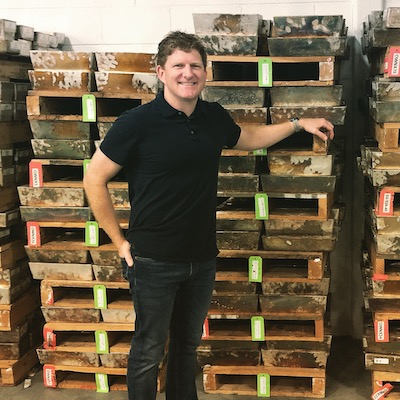

Contact
Josh McCleary

OBJECTIVE
To streamline the operational effectiveness of OWNx, enabling it to grow globally as the best
platform for the accumulation, trading, storage and delivery of physical precious metals (and
beyond).
CAREER PROFILE
Two decades of sales, marketing, finance, and operations expertise. Utilizing early experiences
in sales and marketing to effectively deploy operations (processes and procedures) with rapid
growth in mind. Experience as a fiduciary for retirement accounts, which has progressed into
managing a trusted, innovative system that allows thousands of clients to accumulate and store
physical gold and silver.
CAPABILITIES SUMMARY
Precious Metals Supply Chain
Brings efficiency to the precious metals market by thoroughly understanding the supply chain.
Key relationships have been developed with producers and refiners to obtain goodwill and trust.
This creates collaboration, enabling rapid growth of the supply and logistics necessary to propel
all OWNx business plans from 2016-today.
Innovation
Creating value in the industry by developing new ways for owners of gold and silver to interact
with their holdings. It started with SilverSaver.com and continues with the refinement of future
platforms, allowing for even more streamlined access to gold and silver for the small or large
investor.
Cross-Functional Operations
- Finance
- Sales and Marketing
- Business Development
- Technology Development
- Fulfillment and Logistics
- Government Affairs
- Human Resources
- Customer Support
CAREER HISTORY
2008 - Current - OWNx - Lawrence, KS
Chief Operating Officer
- One of the original founders of the company during the financial crisis in 2008
- Worked closely with the CEO and development team to invent and launch
SilverSaver.com in late 2009
- Negotiated storage and fulfillment contracts with first depository location
- Supported the marketing efforts through the early stages of SilverSaver.com
- Developed customer support processes to handle phone and email queries
- Continually work with development team to identify software bugs in order to
immediately implement fixes
- Instrumental in the development and launch of the OWNx brand.
- Responsible for teaming with the CEO in guiding the vision, mission and values of
the organization
2008 - 2010 - Berthel Fisher - Lawrence, KS
Registered Representative and Investment Advisor Representative
- Advised clients regarding a diverse array of investment options for their individual
portfolios
- Office managed approximately $400 million in assets
- Mitigated risks for portfolios by identifying the need for tangible assets. This drove
our need to create Mass Metal LLC
2008 - 2010 - Great Plains Financial Group - Lawrence, KS
Registered Representative and Investment Advisor Representative
- Advised clients regarding a diverse array of investment options for their individual
portfolios
- Office managed approximately $400 million in assets
- Mitigated risks for portfolios by identifying the need for tangible assets. This drove
our need to create Mass Metal LLC
EDUCATION
B.S. Business - Marketing - Emporia State University - 1999
- Business degree with marketing emphasis
- Multiple cross-functional courses taken in the areas of finance, operations and
business statistics
- Early course work completed in mathematics while pursuing a Secondary Education
major
Series 7 & 66 License (expired 2010)
- FINRA and SEC exams to become licensed to act as as Registered Representative
and Investment Advisor Representative
Kansas Insurance License (expired 2010)
- State exam and subsequent license to provide insurance to individuals in Kansas